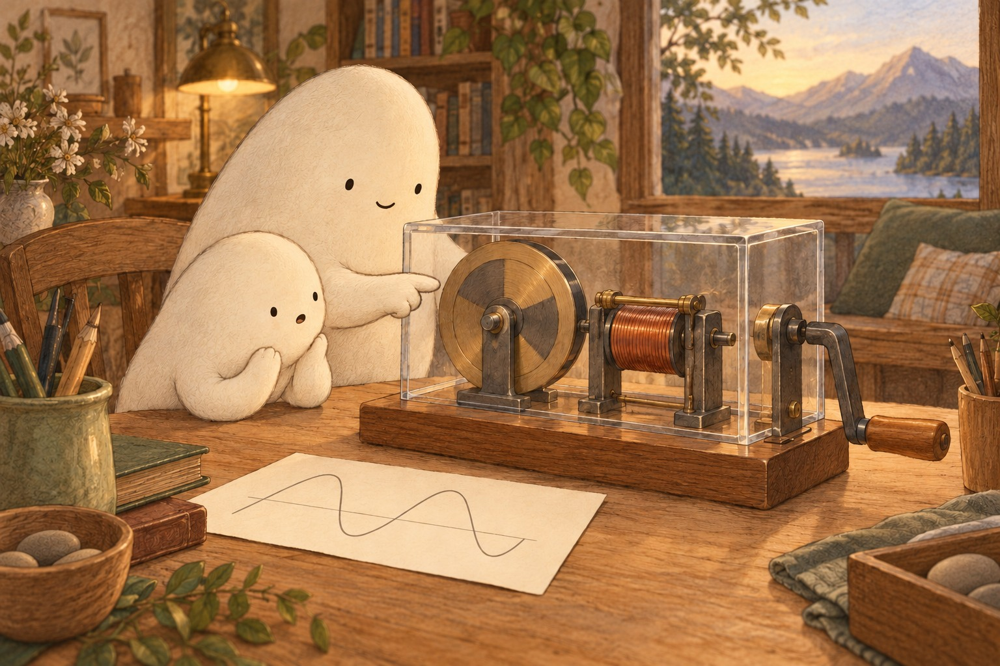
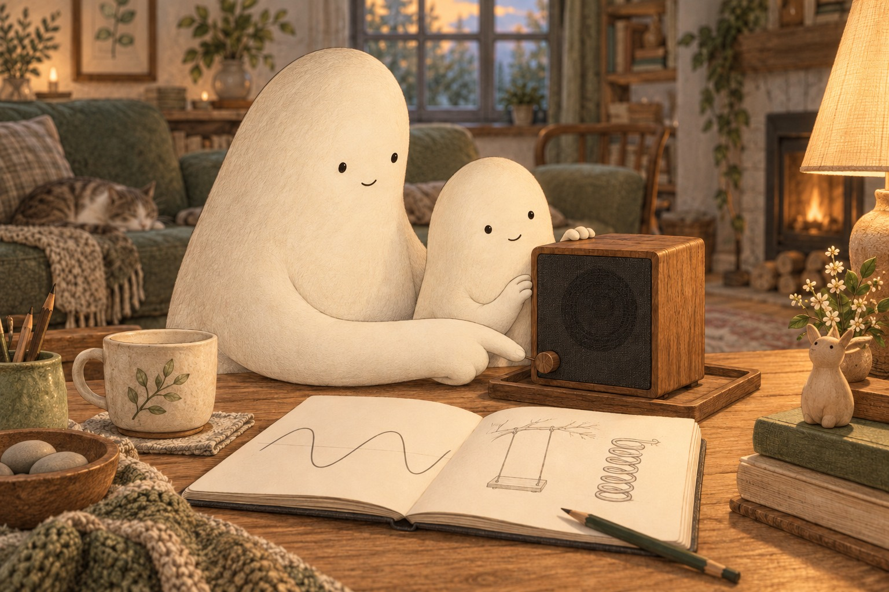
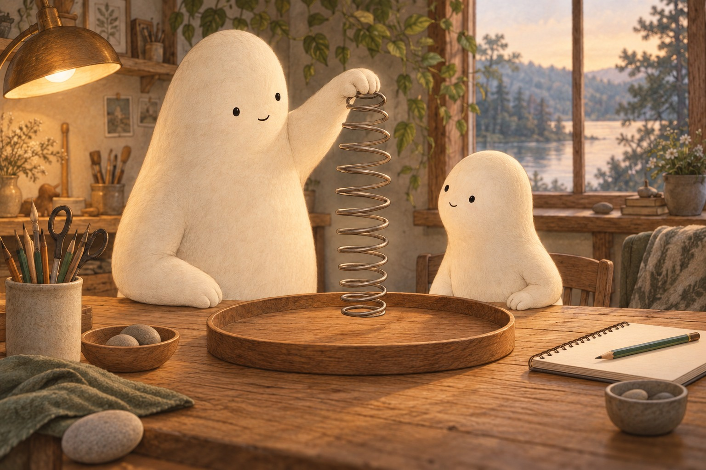
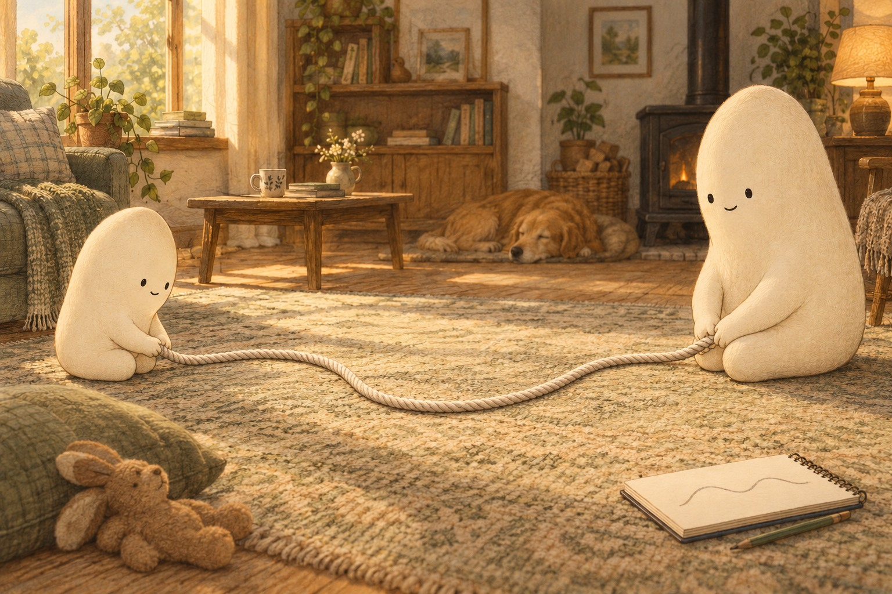

Where else do you see a smooth back-and-forth wiggle?
Where shall we look?
A gentle swing slows near each turn.
What is a sine wave?
Notice how the swing slows near the end of its trip.
A little explanation & something to try
A sine wave is a smooth back-and-forth wiggle that repeats. It can show how a position or an electric push changes over time. A gentle swing moves in a sine-like rhythm; its seat travels along an arc.
Try this. With Big nearby, take a gentle swing, bounce a soft toy spring over a tray, or move a rope from side to side on the floor. Draw the smooth wiggle you notice. Keep wall power and plugged-in devices closed and untouched; these are activities with a swing, spring, rope, paper, or an intact battery speaker.

Spinning can make a smoothly changing electric push.
How can spinning make a wave?
Find the turning disk beside the wire coil.
A little explanation & something to try
A generator turns motion into electrical energy. As a magnet spins beside wire, the electric push changes smoothly, first one way and then the other. Many generators make the AC power supplied at home. AC means that the push changes direction repeatedly.
Try this. Draw a dot on a paper circle. Turn the circle slowly and watch the dot rise and fall.

A speaker moves air to make sound.
What wiggles inside a speaker?
Look at the circle on the front of the speaker.
A little explanation & something to try
The speaker cone moves in and out, making the air nearby squeeze and spread. Those changes travel to your ears as sound. For a pure, steady tone, the cone moves in a sine-like rhythm. Music and voices make more complicated wiggles.
Try this. Let Big set an intact battery speaker to low volume. Rest fingertips lightly on its outer case, leaving the cone alone, and notice any quiet buzz. A drawing of the cone’s motion works too.
A sine wave is a smooth, repeating wiggle.
Why use a smooth wiggle?
Follow the rounded turns in Little’s notebook.
A little explanation & something to try
Spinning parts can make sine waves naturally. Smooth changes help many motors and speakers work evenly. Sudden jumps can make extra buzz or jerky starts. Electronics also use steady power and other signal shapes; not every signal is a sine wave.
Try this. Draw a smooth wave and a zigzag. Trace them slowly with a finger and compare the turns.
Follow the smooth wiggle
Why Electronics Use Sine Waves
A line with a rhythm
Little Wonderer drew a line that rose, curved over, and dipped down. Again and again, it made the same smooth wiggle. “That shape is called a sine wave,” said Big Wonderer. Sine is the math name for this smooth shape. Could a line on paper help explain a swing, a speaker, and electricity?
What repeats in Little’s line?
Slow at the turn
Outside, Little took a gentle swing. Near each end, the swing slowed, paused, and came back. It moved fastest through the middle. Its seat followed an arc. A sine-like line could show its back-and-forth position as time passed. The line was a record of the motion, not the shape of the seat’s path.
How is a record of motion different from the seat’s path?

A bounce comes back
At the table, Big held a spring above a tray. A spring is a coil that can stretch and return. Its lower end bounced up and down, slowing near each turn. Little watched the bounces grow smaller. A steady sine wave repeats evenly; this real spring gradually settled as it lost energy to its surroundings.
What changed about the spring’s bounces over time?

A wiggle travels
Little moved one end of a rope gently from side to side along the floor. A wiggle traveled toward Big. Bits of rope moved back and forth while the wave moved along. Little drew its rounded shape. Smooth turning felt different from suddenly changing direction. The same kind of curve kept appearing in new places.
What traveled along the rope, and what moved back and forth?
A turn makes a push
Big showed a generator: a machine that turns motion into electrical energy. Its magnet spins beside wire. The electric push grows, fades, and reverses smoothly. A sine wave records this change. Many spinning generators make AC power for homes. AC means the push changes direction again and again.
How does spinning change the electric push?
A quiet tone
The speaker made a quiet tone. Its cone moved in and out, nudging air. A pure tone follows a sine-like rhythm. Smooth changes help machines work evenly. Electronics use other shapes too. Little wondered, “Where else can we find this smooth wiggle?”